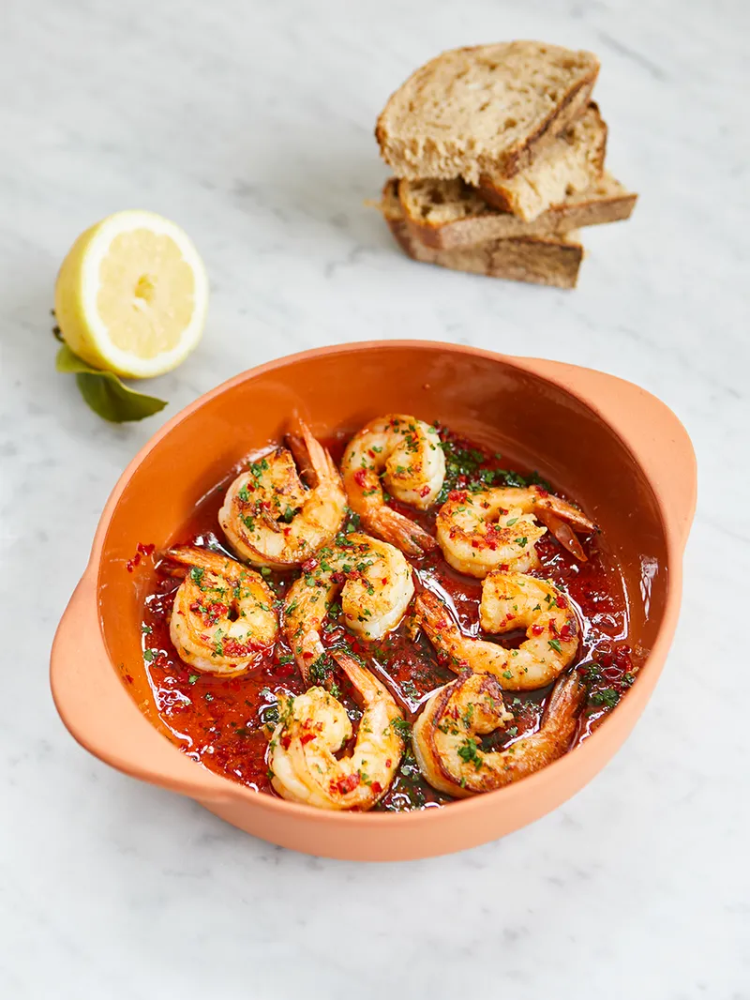

Garlic and Chill King Prawns

Description
This amazing garlic and chilli King Prawn recipe
comes from Jamie Oliver, it has a Spanish origin with a splattering of smoked paprika and is
perfect with a chunk of good bread and a big glass of chilled white wine.
The recipe is quick and easy to follow and can be cooked in under ten minutes - recommended for a quick lunch, starter or part of a tapas set.
If you fancy you could even toss in some noodles or serve with rice to create a full dinner time meal.
Ingredients
- 8 large raw shell-on king prawns
- 3 cloves of garlic
- 1 fresh red chilli
- a few sprigs of fresh flat-leaf parsley
- 50 ml olive oil , ideally Spanish
- ½ teaspoon smoked paprika
- 1 lemon
Process
- If not already done, ensure that you deshell the prawns and discard the vein (poo) by running knife down the back of the prawn
- Peel the garlic and finely chop along with the chilli, I personally keep the seeds in but if you don't want it spicy remove the seeds at this stage. At this stage you should also chop the parsley into small pieces.
- On a medium heat drizzle in your oil and add in the chilli, garlic and paprika to flavour the oil - ensure to stir and do this for around a minute
- Add the prawns and cook for 2 minutes each side (or until cooked) - when flipping the prawns add in 3/4s of your parsley
- Once prawns finished cooking squeeze in the lemon juice and remove from heat, sprinkle on remaining parsley and a pinch of salt.
- Serve with a hunk of crusty bread and a chilled glass of white wine - YUM!